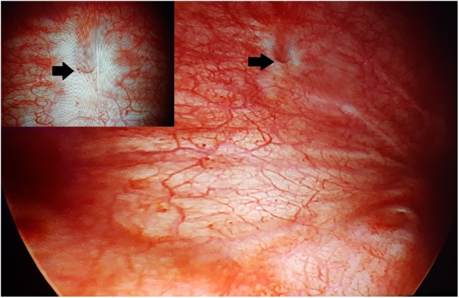

Página 4 · Diferencial — a perda que está sempre ali
Fístula: quando ela nem sabe que é urina
Ela trata “corrimento” há meses, muda de sabonete, faz creme vaginal — e nada resolve. Um dia diz a frase que denuncia tudo: “é um corrimento, mas com cheiro de urina.”
Perda contínua pela vagina que a paciente confunde com corrimento
A fístula é a perda contínua pela vagina — e a armadilha é que a paciente nem sabe que é urina. Ela acha que é corrimento e já se tratou várias vezes por isso, sem sucesso. Às vezes é ela própria quem dá a pista: “é um corrimento, mas com cheiro de urina”. Perda que não tem ritmo de urgência nem de esforço, está sempre ali, molhando — e resiste a todo tratamento de corrimento. Essa frase e essa história devem acender o alerta.
Os dois tipos: vésico-vaginal × uretero-vaginal
A fístula comunica o trato urinário à vagina de dois jeitos. A fístula vésico-vaginal liga a bexiga à vagina; a fístula uretero-vaginal liga o ureter à vagina. Distinguir os dois não é academicismo — muda o exame que localiza e a programação do reparo.
A história que denuncia: cirurgia pélvica (Wertheim), parto complicado, radioterapia
Três histórias denunciam a fístula. A primeira e clássica é a cirurgia pélvica prévia — o exemplo típico é a cirurgia de Wertheim (do câncer de colo), em que se disseca o ureter, aumentando o risco de fístula. A segunda é o parto complicado/distócico — um fórceps difícil, por exemplo, que pode gerar uma fístula, às vezes vésico-vaginal. A terceira é a radioterapia, que altera a consistência do tecido e pode abrir uma fístula. Diante de perda contínua pela vagina, procure ativamente esses antecedentes.
Cistoscopia localiza a vesical; urografia localiza a ureteral
Para descobrir se a fístula é da bexiga ou do ureter, há dois exames. Na cistoscopia, entra-se com a câmera pela bexiga: se a fístula for vésico-vaginal, visualiza-se o trajeto fistuloso — e isso é essencial para programar o tratamento (tamanho da fístula, há quanto tempo existe, se é mais alta/perto do ureter ou mais baixa). Se a fístula for ureteral, a câmera entra e não vê nada na bexiga — quem mostra é a urografia, que evidencia a urina saindo pelo ureter. Resumo de bolso: cistoscopia define a vesical; urografia define a ureteral.

As setas marcam o orifício vesical da fístula: um defeito mucoso focal, um óstio patente — sem massa sólida, vegetante ou franjada. É o achado que se aprende a reconhecer, distinto da lesão tumoral.
Akkoç A et al. Figure 1, Journal of Endourology Case Reports 2018;4:94–96. Sob CC BY 4.0.
O teste prático do corante + tampão
Há um teste à beira do leito que resolve muita dúvida. Sonda-se a paciente e injeta-se um corante dentro da bexiga; coloca-se um tampão na vagina. Depois se lê o tampão: se ele umidece E cora (mesma cor do corante), a fístula é vésico-vaginal — o corante que estava na bexiga chegou à vagina. Se o tampão umidece mas não cora, a fístula é mais alta, ureteral — o corante ficou na bexiga e não chegou ali; a urina que molha o tampão vem do ureter, sem passar pelo corante. Corou, é vesical; molhou sem corar, é ureteral.
Fístula recente e pequena pode fechar com sonda; grande ou crônica, cirurgia
O tratamento depende do tamanho e do tempo. Uma fístula recente e pequena, diagnosticada logo, pode fechar sozinha se a paciente ficar sondada por tempo prolongado — a derivação contínua da urina dá chance à cicatrização. Uma fístula grande ou já crônica exige abordagem cirúrgica. Diagnóstico precoce, portanto, também é oportunidade terapêutica.
Quiz — fixação
Mulher de 48 anos, submetida há 3 meses a cirurgia de Wertheim por câncer de colo, queixa-se de perda vaginal contínua “com cheiro de urina”, já tratada como corrimento sem melhora. Na cistoscopia, não se visualiza trajeto na bexiga. O exame que localiza a fístula e o tipo mais provável são:
- B — a virada. Cistoscopia “limpa” (sem trajeto na bexiga) + dissecção do ureter (Wertheim) aponta para o ureter — e quem mostra a urina saindo pelo ureter é a urografia.
- A. Repetir a cistoscopia que já não viu nada só confirma que não é vesical — não localiza a ureteral.
- C. O tampão que cora indicaria vésico-vaginal, o oposto do que a cistoscopia negativa sugere; aqui o tampão molharia SEM corar.
- D. A ultrassonografia não é o exame que localiza o trajeto fistuloso ureteral — a urografia é.
No teste do corante para investigação de fístula, injeta-se corante na bexiga e coloca-se tampão vaginal. Se o tampão umidece mas NÃO cora, conclui-se:
- C — a virada. Molhou = há urina chegando à vagina; não corou = essa urina não veio da bexiga corada, veio de cima (ureter).
- A. Ignora que o tampão umedeceu — há perda urinária; o teste é positivo para fístula, só não a vesical.
- B. Exigiria o tampão CORADO — como não corou, a vésico-vaginal está descartada; confunde “molhou” com “corou”.
- D. Também exigiria corante alcançando a vagina; sem coração, não é vesical de calibre nenhum.
Da perda que está sempre presente, passa-se ao seu espelho invertido: a bexiga que fica longos períodos sem perder nada — até transbordar.